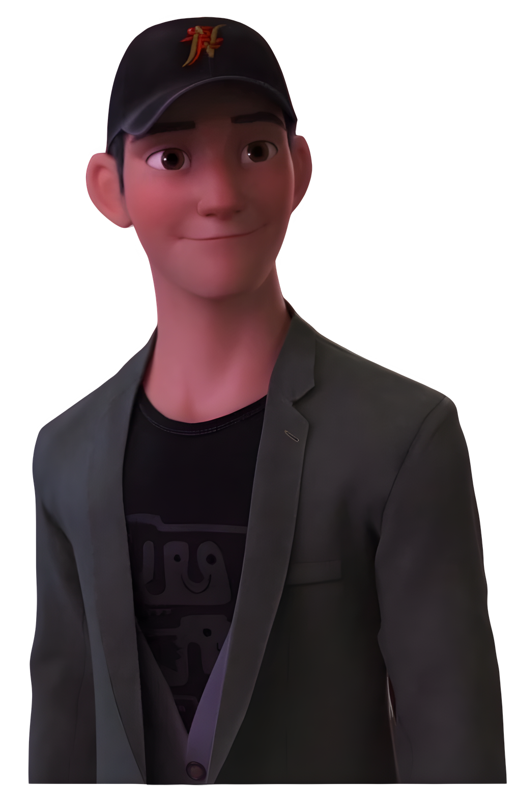
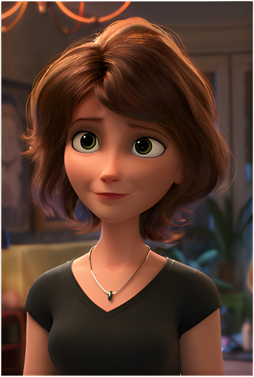
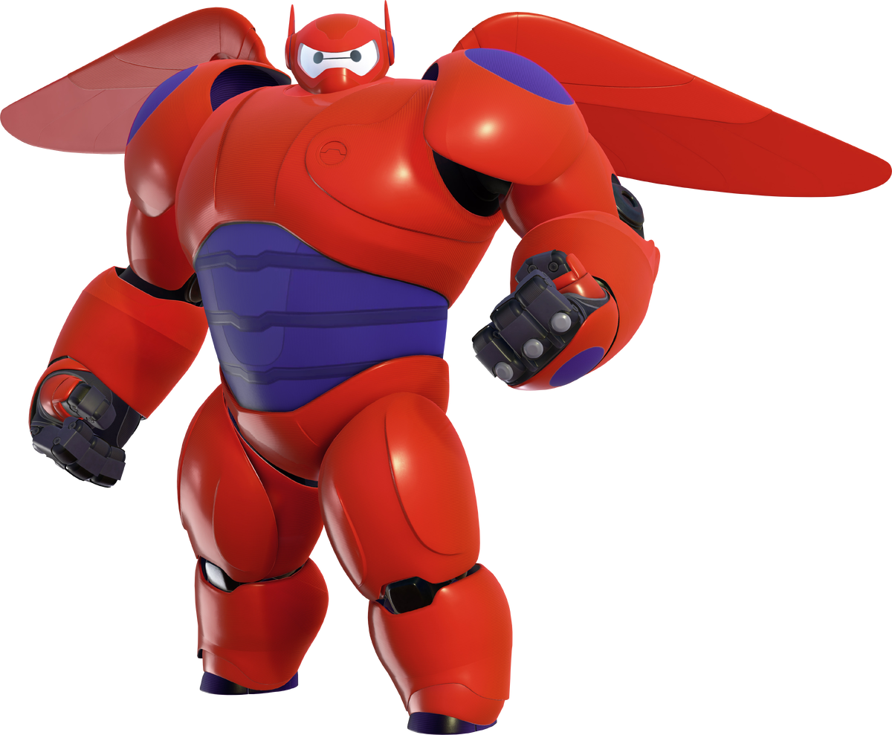
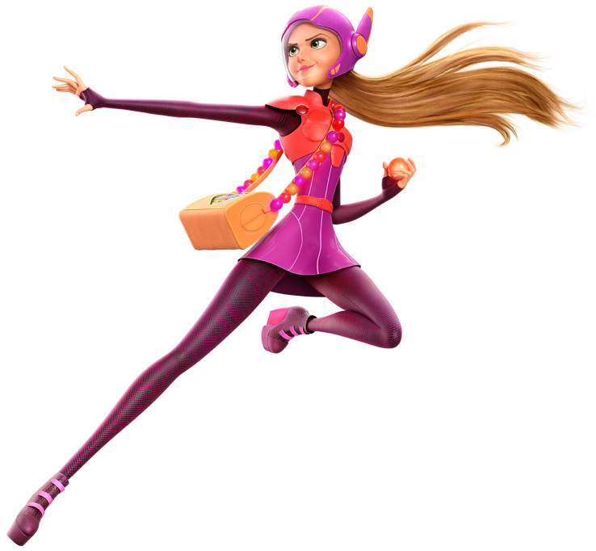
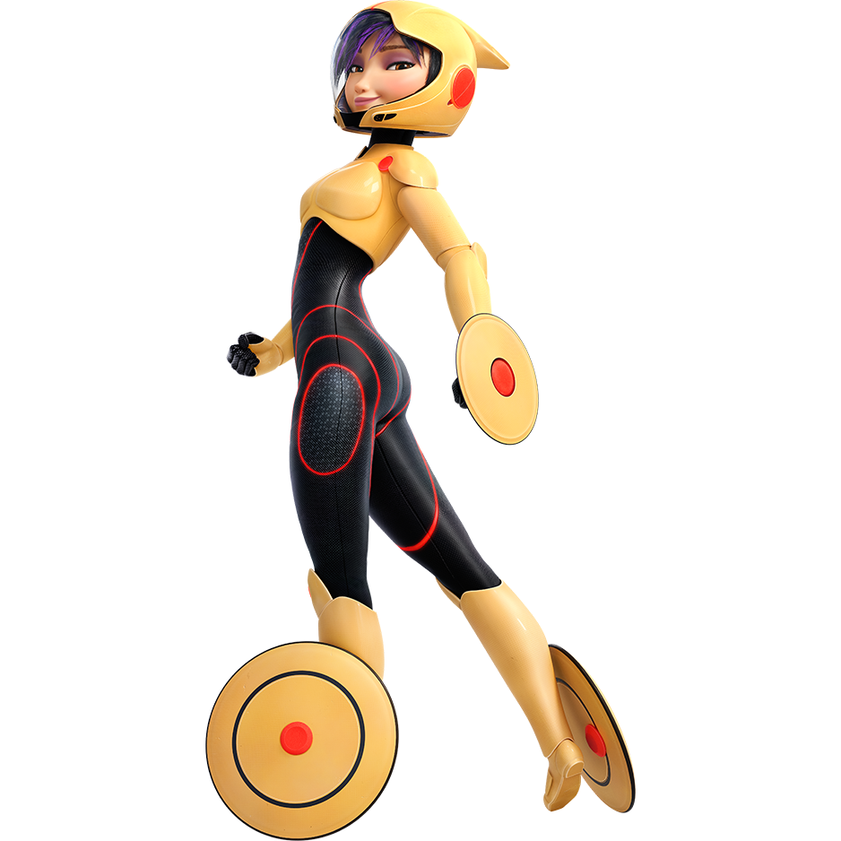
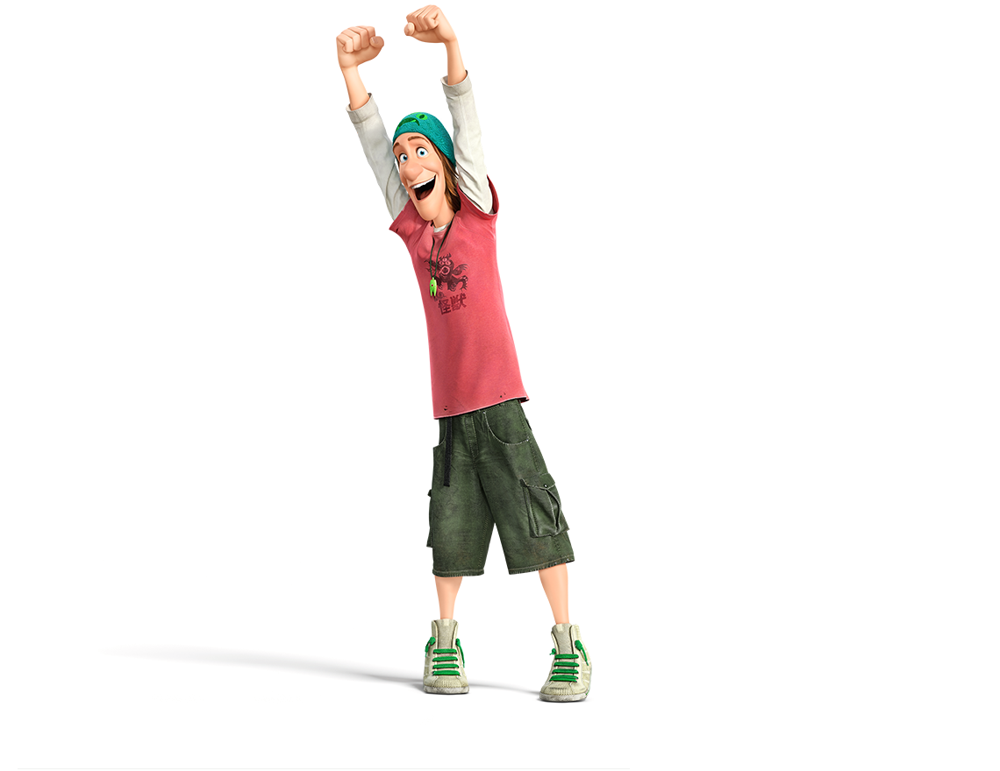
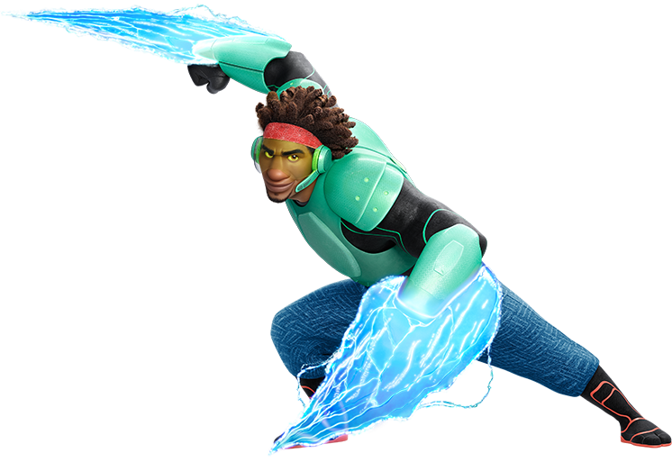
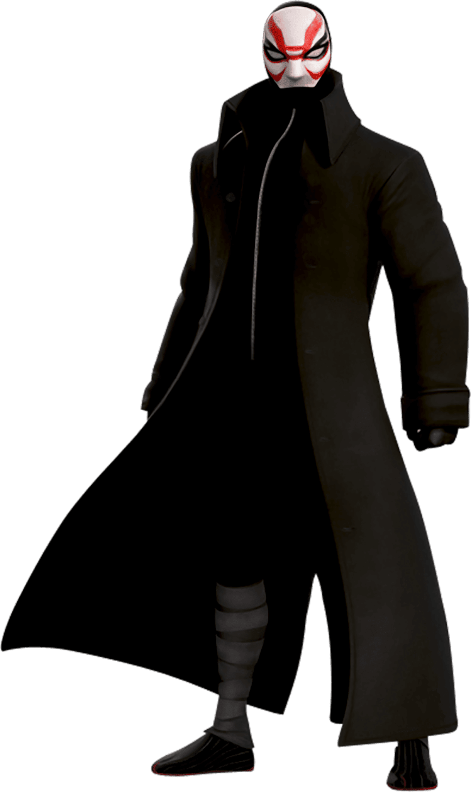
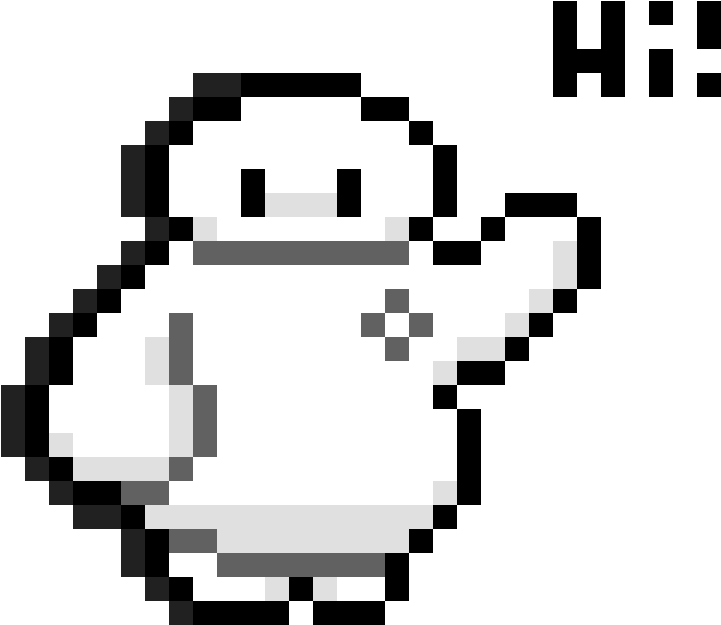

Hiro Hamada is the protagonist of Disney's 2014 animated feature film Big Hero 6. He is a fourteen-year-old robotics prodigy living in San Fransokyo under the care of his aunt and older brother Tadashi. After Tadashi's sudden death at the hands of a kabuki-masked villain, Hiro—with support from his healthcare companion, Baymax—became the founder and leader of Big Hero 6.
Hiro was born in San Fransokyo with biracial background, and notes that he has never been outside of the city.[1] He and his older brother, Tadashi, were orphaned when the former was only three. Following the death of their parents, the brothers were raised by their aunt, Cass, in her popular restaurant, the Lucky Cat Café. Over the following decade, Hiro managed to graduate high school when he was thirteen. Although he was very smart in mind, at heart, he was still fourteen and refused to attend college out of arrogance. He instead spent much of his time participating in illegal bot-fights across the city, where he'd con local gangsters for their money. Tadashi—who came to act as a surrogate guardian alongside Cass—looked down upon this lifestyle and worked to steer his brother down a better path. Tadashi's effort would direct Hiro to the San Fransokyo Institute of Technology, which in turn led to the formation of Big Hero 6.

Tadashi Hamada is one of the two overarching protagonists (alongside Abigail Callaghan) of Disney's 2014 animated feature film Big Hero 6.
A gifted robotics student living in San Fransokyo, he was the older brother of Hiro Hamada, oldest nephew of Aunt Cass and the creator of Baymax.
Tadashi's sudden death in a mysterious fire catalyzes the events of the film, leading Hiro, Baymax and Tadashi's best friends to band together to investigate the "accident" and catch the culprit responsible for it.
Tadashi and Hiro were orphaned at a young age. Together, the two were raised by their overworked Aunt Cass in the Lucky Cat Café for ten years by the events of the film. Tadashi was a star student at the San Fransokyo Institute of Technology, where he studied alongside his best friends (Wasabi, Go Go Tomago, Honey Lemon, and Fred) under the tutelage of his mentor, the world-renowned Professor Robert Callaghan. Under Callaghan's guidance and with the funding of San Fransokyo Tech, Tadashi sought out to create useful technology that could change the world for the better―an opportunity he eventually seizes with the creation of Baymax.

Aunt Cass is a supporting character in Disney's 2014 animated feature film Big Hero 6. She is the aunt of the Hamada brothers, Hiro and Tadashi.
Cass is a caring woman who loves her nephews above all else. She is very loving toward them, but knows when to be strict and firm when necessary, and can get very frustrated and stressed because of them. This is shown when she picks them up after they are released from prison. She hugs them and asks if they are okay before lecturing them semi-strictly about how much they worried her.
Cass seems very excitable, talkative, and is usually in a happy mood. She is also understanding and did what she could to help Hiro through his depression after Tadashi's death.
She supports and encourages the decisions of Tadashi and Hiro while wanting what is best for them, as she encourages Hiro to go to college as it is what Tadashi would have wanted. Cass is proud of her nephews and is not afraid to show it.

Baymax is the deuteragonist of Disney's 2014 animated feature film Big Hero 6. He is an inflatable computerized robot created by Tadashi Hamada to serve as a personal healthcare companion. Following Tadashi's death, Baymax was inherited by Hiro Hamada, with whom he became a member of the superhero team known as Big Hero 6.
He is based on the Marvel character of the same name from the Marvel Comics series, Big Hero 6.
Baymax was conceptualized by Tadashi as a prototype healthcare-providing robot nurse to be mass-produced, with a goal to improve healthcare around the world. He was constructed using equipment and funding courtesy of the San Fransokyo Institute of Technology. Baymax's artificial intelligence (which was based on a thesis by SFIT alumni, Wendy Wower) comes from a special chip with Tadashi's inscriptions. The chip is equipped with a caregiving matrix, and without it, Baymax can be conceived as an entirely different being. As programming would have, Baymax is instantly summoned by the sound of distress, and can only deactivate once his current patient states, "I am satisfied with my care."

Honey Lemon is a major character in Disney's 2014 animated feature film Big Hero 6. She is a bubbly and optimistic chemical engineering student at the San Fransokyo Institute of Technology and a member of Big Hero 6.
Honey Lemon lives in the city of San Fransokyo. A lover of science, and particularly chemistry, Honey Lemon discovered her love for chemistry while in high school. She notes that she also fell in love with a foreign exchange student named Andre during her high school years (for whom she still harbors affections).
Currently, Honey is a star student at the San Fransokyo Institute of Technology, where she spends much of her academic time creating chemical concoctions. In and out of school, Honey is normally accompanied by her best friends Hiro Hamada, Baymax, Go Go Tomago, Wasabi, Fred, and Tadashi Hamada (prior to his death). She got her nickname from Fred for her sweet and sunny personality.
Honey once lived in an apartment with a girl named Regina but was forced to find a new place to live after a chemistry accident froze part of the building. Honey was invited to move in with Go Go, and the two have lived together since (in a notoriously bad neighborhood).
Apart from science, Honey Lemon is also a passionate artist. On the side, she takes lessons at the illustrious San Fransokyo Art Institute, which was founded by Honey's favorite artist and idol, Lenore Shimamoto. Honey initially kept her affiliation with SFAI from her friends due to the rivalry held between the schools, but Fred, Wasabi, Hiro and Go Go confessed to have already known, and accepted Honey for being both a talented scientist and artist.

Go Go Tomago is a major character in Disney's 2014 animated feature film Big Hero 6. A stoic adrenaline junkie, Go Go is an industrial design and mechanical engineering student at the San Fransokyo Institute of Technology and a member of Big Hero 6.
Go Go is of Korean descent. She currently resides in the high-tech city of San Fransokyo, living in an apartment located in a relatively shady neighborhood. She presumably lived alone before becoming roommates with her longtime friend Honey Lemon.
Go Go studies at San Fransokyo Tech, where she works to design new and innovative ways to achieve insane levels of speed on her prized bike. Alongside Honey, Go Go can often be found with her friends Hiro, Baymax, Wasabi, Fred, and Tadashi (prior to his death). Go Go got her nickname from Fred because of the former's love of speed.
On her down time, Go Go regularly visits Muirahara Woods, where she likes to bird watch and sketch the local wildlife. To Go Go, this is her way of relaxing. Despite the closeness of her social circle, Go Go initially kept this a secret from her friends. When they eventually found out, she refused to invite them, choosing to keep it as her "alone thing".

Fred Frederickson is a major character in Disney's 2014 animated feature film, Big Hero 6. He is a young comic book enthusiast, with an eccentric and slightly overbearing personality. Fred accomplished his goal of being a superhero by becoming a member of Big Hero 6.
Fred is the son of Mr. and Mrs. Frederickson, a wealthy couple in the city of San Fransokyo, though he rarely spends quality time with either of them, as they're often away on the family-owned private isles, and usually finds himself under the care of his loyal butler, Heathcliff. Nevertheless, the family fortune, as well as the family mansion, are left in Fred's care during their absence, and the young man spends such privileges satisfying his unhealthy obsession with comic book lore, Japanese giant monsters, and other nerdy hobbies. While Fred's parents embrace their son's individuality, Fred is looked down upon by some of his family's peers, particularly a woman named Binky—her son, Richardson Mole, serves as Fred's longtime rival.
Aside from this, Fred is also a regular attendant at the San Fransokyo Institute of Technology, where he works as the school's mascot, and entertains his passion for science (which seems to actually be more of a fanboyish love for science-fiction). At the school, he spends most of his time with his closest friends Wasabi, Honey Lemon, Go Go Tomago, and Tadashi Hamada, and was noted to be the creator of their peculiar nicknames, basing them off their dominant personality traits (although Wasabi was given his namesake after spilling the food of the same name onto his shirt on one occasion), as well as explaining why he's the only member of their group with an average name; Tadashi aside.

Wasabi is a major character in Big Hero 6. He is a member of the superhero team Big Hero 6.
Few things are known about Wasabi's past: His father is an orthodontist, he grew up on an organic commune, upstate, and his penchant for order is a reaction to his free-spirited upbringing[2]. At 6-years old, he knitted his first sweater.
In high school, he started a competitive ironing team, but since his team was the only one in that category, he always won every trophy. He was also a two-time State Fair winner of blue ribbon in tomato competition.
His interest in science started with the belief that sound science is the result of deliberation and meticulous attention to detail[2]. After joining the San Fransokyo Institute of Technology, majoring in Applied Physics, he befriended students Tadashi Hamada, Honey Lemon, Go Go Tomago, and the school mascot, Fred Frederickson. He received the nickname "Wasabi" from Fred, after accidentally spilling the stated condiment onto his own shirt on a single occasion.

Prof. Robert Callaghan (also known as Yokai) is the main antagonist of Disney's 2014 animated feature film Big Hero 6. He is the former head robotics professor at the San Fransokyo Institute of Technology and mentor to Tadashi Hamada. After suffering a personal tragedy, he became a silent, kabuki-masked supervillain bent on exacting vengeance, with an army of Microbots at his command.
Professor Robert Callaghan was an aspiring man; a world-renowned scientist praised for his innovations on the foundations of robotics, as well as the creation of Callaghan's Laws of Robotics. With such recognition and knowledge, Robert put himself to good use by teaching as the head professor at the San Fransokyo Institute of Technology, where he mentored such prodigies as the brilliant Tadashi Hamada, who admired him greatly. Although he was passionate about science and robotics, Robert's true love lay within his daughter Abigail, who was once a test pilot for Krei Tech Industries: The world's leading technology industry, owned and operated by San Fransokyo's own Alistair Krei. One of Krei's latest ambitions, at the time, was the desire to revolutionize transportation through the use of portals—a project dubbed "Silent Sparrow". Unfortunately, during the experimental test run, a malfunction occurred in the system, and Abigail was lost in the portal, eventually presumed to be deceased. The tragedy left Robert with a hardened heart, and since, he swore revenge on Krei, and eventually descended into villainous madness as time would pass and his lust for vengeance strengthened. This would ultimately lead to the "death" of Robert's former identity and the birth of Yokai.

